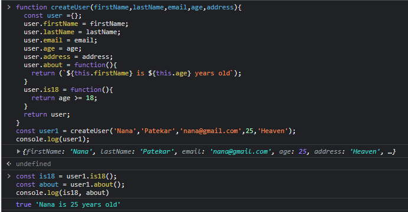

2nd program is much more quicker and efficient because in first program is always creates two new methods every time new user was created so instead we use the down below code
here we have combined both __proto__ and prototype together